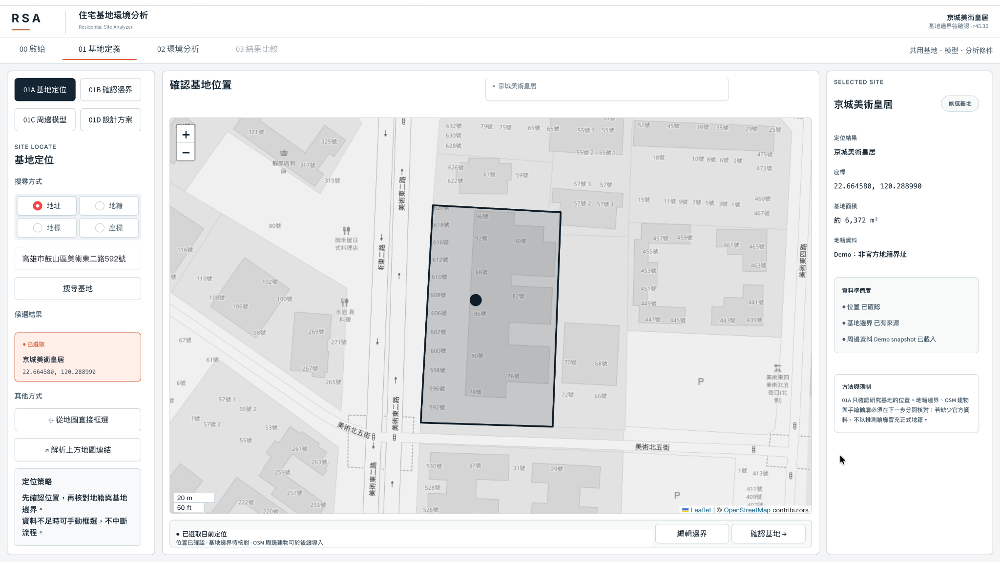

01 / RSA Core
真正存在的
研究系統原型。
以 Python、Streamlit 建構的開發中平台，包含基地、建築量體、2D／3D 環境視覺化與相關分析流程。
現有研究原型- 基地及鄰棟量體設定
- 日照與遮蔭時間分析
- 探索性風環境視覺化
- UTCI 熱舒適研究及持續驗證

真實系統 / 基地工作區02 / RSA Studio
從環境分析
走向設計改善。
規劃中的設計比較工具，希望呈現方案差異、各樓層與不同時間環境證據，並保留比較前提。
未來產品概念 · 尚未正式提供- A／B 方案比較
- 樓層與時間尺度判讀
- 設計改善建議的證據鏈
- 報告整合與匯出規劃
CONCEPT / RSA STUDIO
A / B / Better.
讓每一次設計變更，都能回答「改變了什麼」與「根據什麼」。
概念示意，非已推出產品畫面。
03 / RSA Intelligence
讓 AI 解釋，
而不只生成文字。
預計研究 Claude API 如何根據具來源的環境分析資料產生解釋，並支援人工檢查與不確定性說明。
AI 功能規劃中 · 尚未部署- 由資料支持的分析摘要
- 可追溯的比較說明
- 重要限制與假設揭露
- 使用者理解與決策成效研究
FUTURE INTELLIGENCE
Explain the evidence.
不只告訴使用者結果，而是協助理解結果為何不同，以及哪些部分仍不能確定。
設計概念，非實際 AI 輸出真實系統畫面 / 研究原型
看得到的系統，
而不只是想像。
以下圖片均來自 RSA 真實開發中的系統介面。點擊圖片可放大檢視；畫面不等於整體數值精度或產品成熟度已獲驗證。
開發階段說明不同功能仍需要整合、回歸測試、數據來源稽核及更完整的科學比對。
合作與研究交流
以證據為起點。
一起探索可能。
對住宅基地環境分析、方法驗證、研究合作或未來建築科技應用有興趣？歡迎直接與專案開發者聯絡。